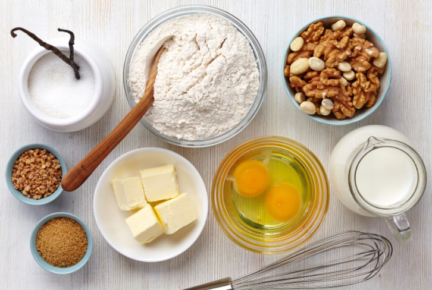

Chunky Pancakes
Chunky Pancakes is an easy and recommended recipe for sweet lovers, in addition to being prepared in a simple way and with the ingredients that we all have at home!.


Method
Combine flour, baking powder and salt. In a separate bowl, whisk together the skimmed milk, melted butter, eggs, sugar, and vanilla. Make a well in the centre of the dry ingredients and gently stir in the wet ingredients. Fold in the banana, chocolate chips, and nuts.Add a ¼ cupful to an oiled large frying pan over a medium heat Cook until bubbles appear on the surface, flip and cook until browned on the other side.